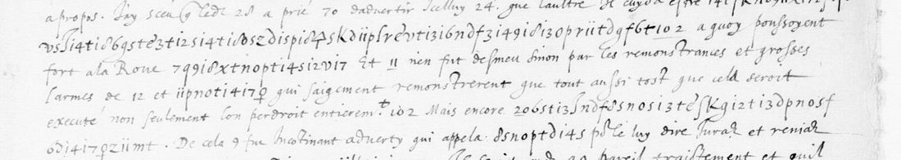
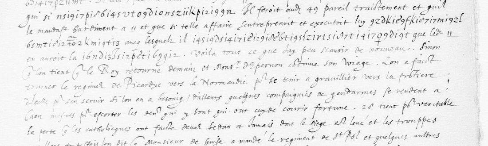

7 i7 id i2 t 6 s 8 g p i3 f 2 X showed that a sign is one character, or the figure 1 plus a character. From there the runs of f. 62 were read one at a time against their clear context, and each run added to the key. 350 of the 353 letters read. The letter reports that Henri III was nearly resolved in council to have five or six of the leading Paris ligueurs thrown in the river, a fortnight before the Day of the Barricades, and gives Guise’s answer. One name, one word and four code numbers stay open.01 The document
Fr. 3976 is a volume of Nevers’s papers for 1588, on Gallica as btv1b9060548h; f. 62 is view 111. The BnF’s piece-by-piece notice lists it as no. 30: “Lettre, avec chiffre, adressée au duc de Nevers, contenant entre autres nouvelles, celle de la levée du siège de Sedan et de Jametz. Ce 29 avril 1588.” The neighbouring pieces at ff. 56 and 60 are symbol ciphers from the cardinals of Bourbon and Guise, each with its decipherment. They use a different system.

4kd3si4ti3) follows “si”; the second line ends in the run for “leur entreprise a failly”. Image: Bibliothèque nationale de France, fr. 3976 f. 62r, via Gallica (btv1b9060548h, view 111).The last lines explain the method: “Il y a quelques motz au chiffre cy dessus que j’eusse plus aisement et briefvement mis par nombres, mais craignant que ne feussiez memoratif d’iceulx n’ayant ce chiffre, j’ay mieulx aymé estre plus long.”
02 The key, from the informant’s June letter
The same hand, cipher and monogram appear on f. 131 (4 June 1588) and f. 133 (6 June 1588). On f. 131 someone wrote the plaintext above the runs: “quelques mutins d’entr’eux”, “conte de Brissac”, “que s’il pouvoit”, “Roy”, and over the numbers 24 “nevers” and 11 “le Roy”. (The gloss over 24 was first read here as “Navarre”; the letter of 6 June, read later the same day, showed that 24 is Nevers.)
The Brissac gloss fixed the unit. 7 · i7 · id · i2 · t · 6 · s · 8 · g · p · i3 · f · 2 · X is fourteen signs for the fourteen letters of contedebrissac, where the i-like character is the figure 1 and pairs with the sign after it. With some fifteen values from f. 131, the runs of f. 62 began to read. Each run then added values to the key: 11 p n o t 14 17 ϙ after “les grosses larmes de 12 et” gave Villeroy; the next person named gave Bellièvre; …n ce royaume gave 9 = a; “chancellier et d’O” gave v = d. The alphabet is homophonic, and some signs stand for two letters: the curly 8 is b, u or v, 9 is a, h or r, and 3 is g or j. The hand’s 2 looks like a z, its 8 like a curly d and its 9 like a g, and the first transcription fell into all three traps. The key is in key.md.
03 The reading
The deciphered runs are in bold. Numbers are the writer’s code numbers.
J’ay communiqué a 28 la lettre de [monogram]. Suivant laquelle je diz qu’il ne faudra pas, si Fougères(?) est encore icy, de luy representer les pertinentes raisons contenues en icelles, par lesquelles se congnoist assez que les advertissements de 24 ne peuvent avoir esté cause de leur ruyne comme ilz disent, ny de quoy leur entreprise a failly. Aussi la pluspart de ceulx qui en ont parlé n’entendoyent pas que celle de 24 feust semblable a l’autre, ny que ce que 24 feust venu eust esté a l’appetit de 9, ains seulement a la ruyne de 10, assistée de plusieurs gens de bien et d’autorité qui y estoyent fort disposez et s’i disposent encore tous les jours. Mais 28 et 70 estiment bien que 24 a assez de jugement pour n’embrasser telle entreprise que bien a propos.
J’ay sceu que led. 28 a prié 70 d’advertir icelluy 24 […]. Il cuyda estre resolu au conseil de prendre et jetter en l’eau cinq ou six des plus grans ligueurs de 102, a quoy poussoyent fort a la Royne, chancellier et d’O. Et 11 n’en fut desmeu sinon par les remonstrances et grosses larmes de 12 et Villeroy, qui saigement remonstrerent que tout aussi tost que cela seroit executé, non seulement l’on perdroit entierement 102, mais encore 20 des plus belles et fortes villes du royaume.
De cela 9 fut incontinent adverty, qui appela Bellièvre pour le luy dire, jurant et reniant que si le moindre de la ville l’avoit mal, il feroit aud. 49 pareil traitement, et qu’il le mandast hardiment a 11, et que si telle affaire s’entreprenoit et executoit, luy avoit a son commandement 40 mil hommes, avec lesquels il remueroit tant de messages(?) en ce royaume que led. 11 en auroit la plus petite part. Voila tout ce que j’ay peu scavoir de nouveau.

Translation of the core. The King was nearly resolved in council to seize and throw into the river five or six of the chief ligueurs of Paris, pressed to it by the Queen, the chancellor and d’O. Only the remonstrances and tears of 12 and of Villeroy stopped him: they argued that once it was done he would lose Paris and twenty of the finest towns of the kingdom as well. Guise (9) heard of it at once and sent for Bellièvre to tell him, swearing that if the least man of the town came to harm he would deal with 49 the same way. Bellièvre could tell the King so plainly. If the thing were attempted, Guise had forty thousand men at his command, and with them he would stir up so much in the kingdom that the King would be left with the smallest share.

Code numbers: 11 = the King and 24 = the duc de Nevers are glossed on f. 131, and 10 = the duc d’Épernon on f. 139 (see the June letters). 102 = Paris and 9 = the duc de Guise follow from the context. 12, who wept with Villeroy, is probably Catherine de Médicis.
04 What failed first
- Tomokiyo’s Nevers keys in fr. 3995, nos. 10, 11, 16 and 18, and an alphabet on view 45 of that volume. None reads run 1.
- A ciphertext-only homophonic anneal on about 440 characters, with letter, null and word-divider variants for the i-like sign. It collapsed to strings of e, n and t, because the unit was not yet known and the transcription was too noisy.
- The symbol ciphers of ff. 56 and 60, which come with decipherments. They belong to another system.
05 What remains uncertain
- Run 1: read letter by letter as Fougères (grade C). This is a person at court, not identified.
- Run 18: messages (grade C) holds only if the sign 1r = g. That sign occurs once.
- Run 15, l’avoit mal: grade C.
- Code numbers 10, 28, 49 and 70 are not identified. 12 is identified by context only.
- The June letters on ff. 133–134 (DECODE R3708) and f. 139 use the same key and have not been read here.
06 Sources
- BnF Français 3976, Gallica f. 62 (view 111), f. 131 (view 221), f. 133 (view 223).
- DECODE record R3705.
- BnF fr. 3995 (Nevers’s cipher collection), Gallica
btv1b525085665. Satoshi Tomokiyo, “Ciphers of the Duke of Nevers”, cryptiana.web.fc2.com.
Transcription, key, reading table and scripts: nevers1588/ in the repository.